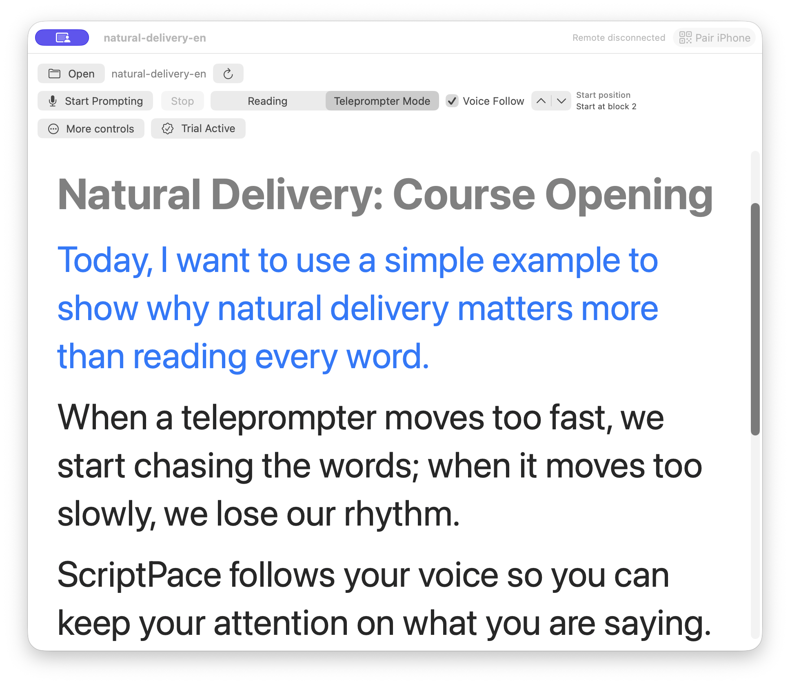

01 · Mac script view & system speech
Hear the script aloud before stepping on camera.
Open a supported Markdown or plain-text script on Mac and let system speech read it at your chosen rate—ideal for checking lesson transitions and breathing room.
